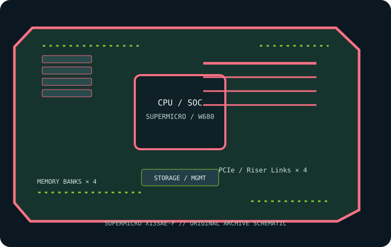

[ INDIVIDUAL COMPONENT // MOTHERBOARDS ]
Supermicro X13SAE-F
ATX LGA1700 W680 workstation board for supported Intel Xeon E-2400 and Core processor families. This page records the exact printed model and revision policy with manufacturer references.

MODEL / REVISION: Exact model X13SAE-F; no revision suffix in the product name. Read the physical PCB revision before choosing BIOS or service documentation.
Specifications
| Exact model / revision | Supermicro X13SAE-F — Exact model X13SAE-F; no revision suffix in the product name. Read the physical PCB revision before choosing BIOS or service documentation. |
|---|---|
| CPU and socket | One LGA1700 socket for supported 12th/13th/14th Gen Intel Core processors; check CPU support list and BIOS for the exact processor. |
| Chipset / platform | Intel W680. |
| Board size | ATX, 305 × 244 mm (12 × 9.6 in). |
| Memory / ECC / registered | Four DDR5 ECC/non-ECC unbuffered UDIMM sockets; up to 192 GB per current manufacturer information. ECC requires compatible ECC UDIMM and CPU. Do not install RDIMM; supported speeds depend on CPU and QVL. |
| PCIe / lanes | Two PCIe 5.0 x16 slots (x16/none or x8/x8 configuration) and two PCIe 3.0 x4 slots; check lane sharing in the model manual. |
| Storage | Three M.2 PCIe 4.0 x4 sockets and eight SATA 6 Gb/s ports; confirm connector sharing in the manual. |
| Networking / BMC | Intel 2.5GbE and 1GbE host LAN plus dedicated BMC management Ethernet; ASPEED AST2600 BMC/IPMI. |
| Firmware / compatibility | Verify the exact CPU and minimum BIOS on Supermicro’s support list. ECC operation requires a compatible Xeon/CPU and unbuffered ECC DIMMs; install DDR5 UDIMM only. Use the X13SAE-F image, never a related X13SAE-F image. |
Compatibility and revision notes
Verify the exact CPU and minimum BIOS on Supermicro’s support list. ECC operation requires a compatible Xeon/CPU and unbuffered ECC DIMMs; install DDR5 UDIMM only. Use the X13SAE-F image, never a related X13SAE-F image.
Before installation, verify the physical revision and assembly label, CPU support list and minimum BIOS; confirm the exact memory type (UDIMM versus registered DIMM), channel population, chassis form factor, PCIe lane routing and storage connector modes against the linked vendor manual. A mechanically compatible socket does not guarantee CPU, firmware, ECC or lane compatibility.
Preservation and service
Record BIOS and BMC versions, serial and MAC labels, installed processors and DIMM part numbers, risers/cables, and test conditions. Use ESD-safe handling, correct socket procedure and chassis airflow. Do not cross-flash firmware from a similarly named board or revision.
Sources & further reading
- Supermicro — X13SAE-F product specificationsManufacturer reference for the exact board model; use its support/QVL/manual details to verify population and compatibility.
- Supermicro — X13SAE-F manual and firmware resourcesManufacturer reference for the exact board model; use its support/QVL/manual details to verify population and compatibility.
Manufacturer model-specific references take precedence. Recheck CPU support, QVL, lane tables and current firmware for the printed board revision before service.